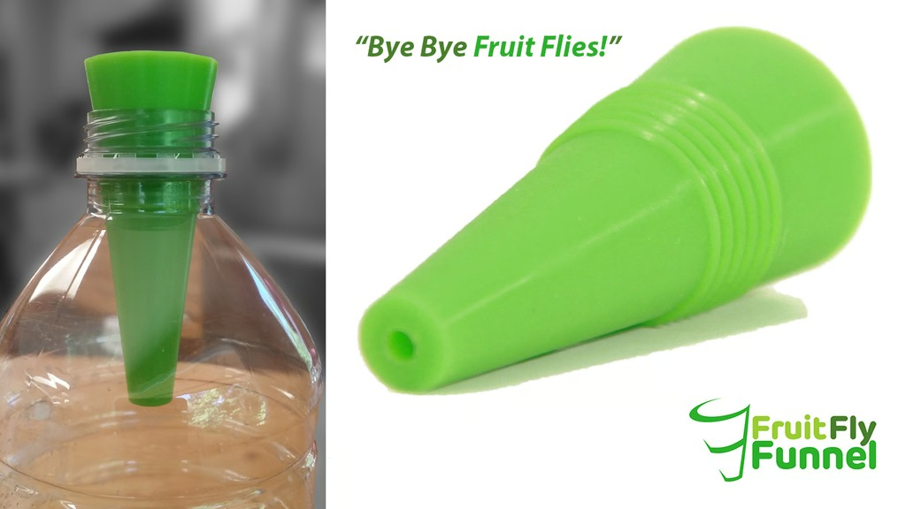

Our story
A simple idea. A reusable solution.
Fruit Fly Funnel™ brings a reusable approach to a familiar household problem. Discover a funnel-style trap designed with repeat use in mind.
Meet Fruit Fly Funnel™: a reusable trap designed to help tackle pesky fruit flies without the disposable-trap routine.

Designed for repeat use instead of replacing the entire trap.
A dedicated funnel-style trap for a common household nuisance.
A straightforward product with a simple purpose: helping you trap fruit flies.
Fruit Fly Funnel™ brings a reusable approach to a familiar household problem. Discover a funnel-style trap designed with repeat use in mind.
Yes. Reusability is central to the original product concept.
Current inventory and ordering options are being confirmed. Please check back for updates.
Verified setup and care instructions will be published here.
We're preparing the next chapter of Fruit Fly Funnel™. Product availability and purchasing information will be posted here when confirmed.